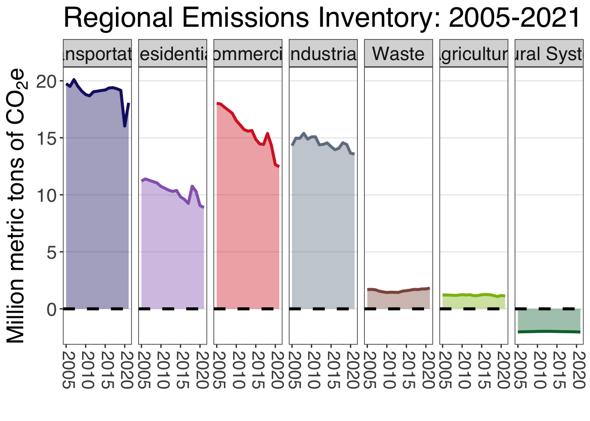

Twin Cities MSA Greenhouse Gas Inventory
Climate Pollution Reduction Grant Documentation
Executive summary
This project has been funded wholly or in part by the United States Environmental Protection Agency (EPA) under assistance agreement 00E03476 to the Metropolitan Council. The contents of this document do not necessarily reflect the views and policies of the EPA, nor does the EPA endorse trade names or recommend the use of commercial products mentioned in this document.
Note
This document will be updated continuously in preparation of the Metropolitan Council Comprehensive Climate Action Plan (CCAP). Please check back occasionally as we update modify and add new content. You can find a summary of changes in the Appendix I — Release notes.
In 2021, the Twin-Cities MSA generated 56.29 million metric tons CO2 equivalent (MMtCO2e) emissions from energy, transportation, and waste sectors. Transportation was the largest contributor to GHG emissions (32.1%), followed by Industrial (24.1%), and Commercial (22.2%). Carbon sequestration from natural systems offset 4.2% of total emissions.
Emissions through time
Emissions in the region fell by 15.4% from 2005 to 2021. This is principally attributed to decarbonization of the electric grid, which fell 43.9% from 2005 to 2021. Other sectors showed small increases or decreases.

County Emissions
Different counties have different emission profiles depending on land-use and community characteristics.
However, most emissiosn are closely tied to population and a per capita emissions profile shows a more even distribution.
About this document
This is a Quarto book. Code, data, and documentation are all stored in the same place. We primarily use R.
- To navigate from chapter to chapter, click on the chapter name in the left sidebar or click the arrow button at the end of the page.
- Citations can be previewed by hovering your mouse over the citation.
- Links to R scripts are available throughout the document. Click on the link to open the relevant R script and peruse the code behind this inventory.
- All plots are interactive. Hover your mouse over any bar or dot, and detailed information will appear. If you want to take a static screenshot of a plot, hover your mouse over the plot and find the camera icon in the upper right tool bar.
- Sections are cross-referenced throughout the document. Click on a “Section x.xx.xx” link to navigate to the appropriate section
- All headings, tables, and figures are permalinked, meaning that you can share specific sections of the document through a URL. Hover your mouse over a heading and click on the link icon. Then, copy the URL in your browser and share with colleagues.
Acknowledgements
This document is the result of tremendous work across the Metropolitan Council. Individuals are noted by their name, title, contribution, and division.
Contributors
- Laine McNamara, Business Systems Analyst III, editing (CD)